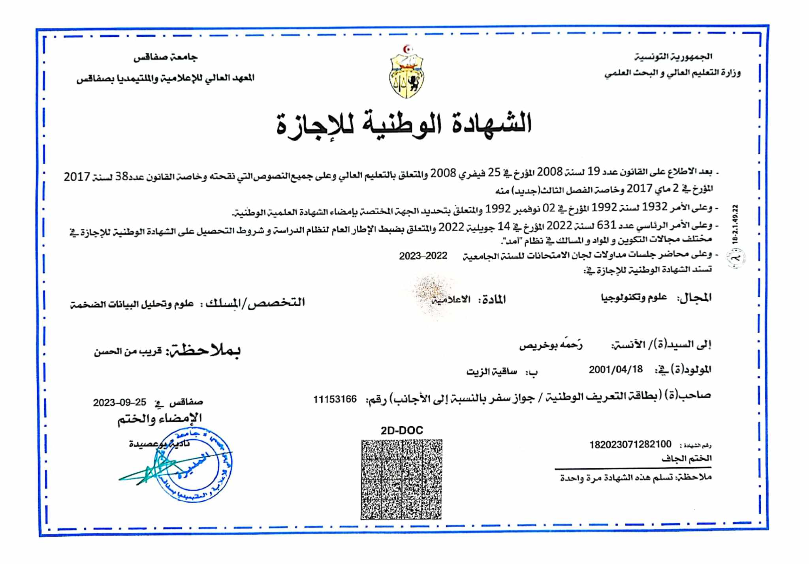
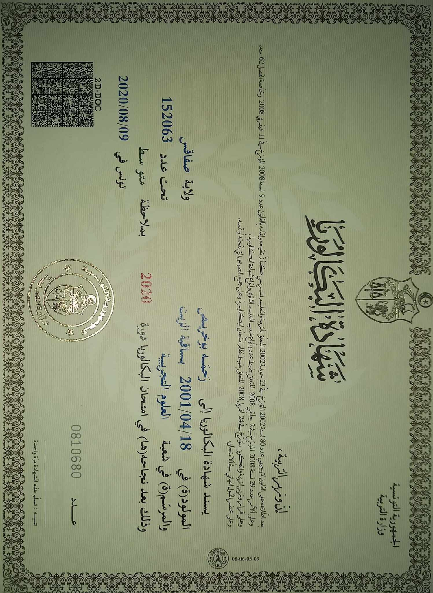

Rahma Boukhris
- Home
- Rahma Boukhris
Licence en Big Data et Analyse de Données
Institut Supérieur d'Informatique et de Multimédia, Sfax - Année d'obtention : 2023
En 2023, j'ai obtenu mon diplôme de Licence en Big Data et Analyse de Données avec la mention "Assez Bien" à l'Institut Supérieur d'Informatique et de Multimédia de Sfax. Au cours de ce programme, j'ai acquis des compétences approfondies dans le domaine du Big Data, de l'analyse de données et des technologies associées. Les cours ont couvert des sujets tels que les bases de données, l'apprentissage automatique et la gestion de l'information, me préparant ainsi à contribuer de manière significative dans le domaine en constante évolution de la gestion et de l'analyse des données.
Baccalauréat en Sciences Expérimentales
Lycée Secondaire Moham ed Ali, Sfax - Année d'obtention : 2020
J'ai obtenu mon baccalauréat en Sciences Expérimentales avec la mention "Assez Bien" du Lycée Secondaire Mohaled Ali à Sfax en 2020. Ce programme m'a fourni une solide base en sciences, couvrant des domaines tels que la physique, la chimie et la biologie. Mon parcours au lycée a renforcé ma passion pour les sciences expérimentales et a jeté les bases de mon engagement continu dans le domaine de l'éducation et de la recherche.
